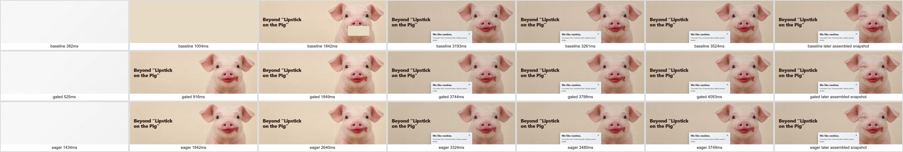
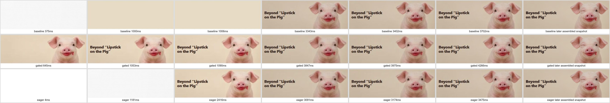

Actual first-repeat CDP frames, selected around load/readiness events. Times are navigation-relative frame metadata, not exact hardware scanout. Final snapshot is labelled separately. Top row original baseline, middle e406a5c1, bottom eager direct hero.

